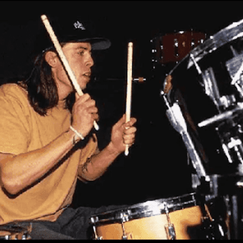
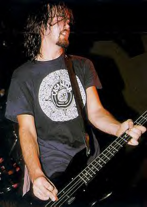
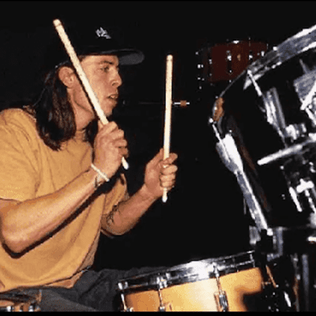
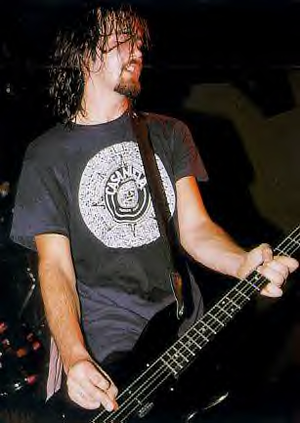

Integrantes
KURT COBAIN
DAVE GROHL
KRIST NOVOSELIC
 



Kurt Donald Cobain (Aberdeen, Washington; 20 de febrero de 1967-Seattle, Washington; c. 5 de abril de 1994) fue un cantante, músico y compositor estadounidense, conocido por haber sido el cantante, guitarrista y principal compositor de la banda grunge Nirvana. Es considerado como un icono y voz de la generación X. Durante los últimos años de su vida, Cobain luchó con depresión, enfermedad y adicción a la heroína. También tenía dificultad para sobrellevar su fama e imagen pública, las presiones profesionales y personales. El 8 de abril de 1994, Cobain fue encontrado muerto en su casa en Seattle
David Eric Grohl (Warren, Ohio, 14 de enero de 1969) es un músico multiinstrumentista estadounidense de rock. Saltó a la fama a comienzos de los años 1990 como batería de la icónica banda de grunge Nirvana. En 1994, tras la muerte de Cobain y el fin de Nirvana, formó otra banda, Foo Fighters, siendo él en un principio el único miembro y más tarde el vocalista, guitarrista y compositor.
Krist Anthony Novoselić, Nació el 16 de mayo de 1965 en Compton (California). Fue el co-fundador de la banda junto a Kurt Cobain, Sus padres, eran inmigrantes yugoslavos. Este aportó a Nirvana un estilo diferente al de otras bandas similares por el sonido pop de su bajo